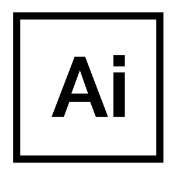
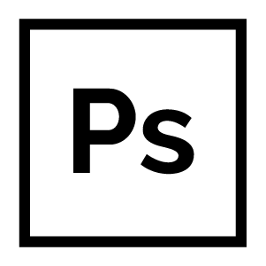
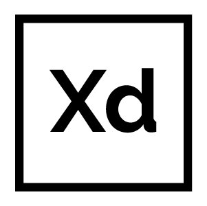
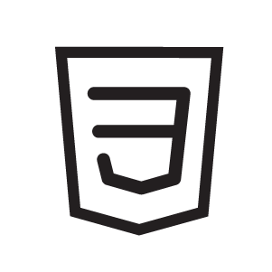
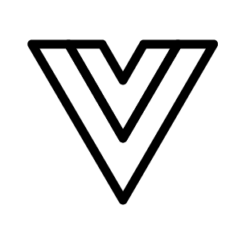

Stakeholder
Reeracoen Recruitment (CS Team)
Platform
Web App(RWD)
Delivery
Design / Front-End Development
Skills





Year
2022-2023
Project URL
Brief & Requirement
Sourcedout is a web-based platform which is developed by the Reeracoen Recruitment during Covid 19 situation to connect professional freelance recruiters with a huge job pool of the recruitment company. This app gives freelancer opportunities to source candidates and receive an extra income upon successful placements.
Design Thinking Process
Empathize
The company, serving as a recruitment regency currently meets the new challenge on how to get the right candidates for their clients within lower cost, budget and less recruiting procedures by internal recruiters.Sourcedout app has been developed to solve the defined pain point by creating an easy to use web platform for experienced freelance recruiters to match job list with sourced candidates.
The UX design thinking for this project (in the 1st phase) mainly focuses on how recruiters (supposed that 80% of users might already have a good basic technical competence) can easily navigate through the app dashboard and tool to complete goal, from sourcing job list, matching candidates to submit them to successfully receive placement.
Mockup & Prototyping
This app layout was initially applied with CoreUI dashboard framework (VueJS) to speed up the project timeframe. As a role of UX/UI designer I work closely with the project manager and stakeholder to ensure a positive experience for users when interact with the app such as layout, seachability, CTA,Also working on wireframe and mockup, the clean and simple mood and tone design was decided for this project. I created a prototype by coding (using HTML, CSS and VueJS language) to test the design finish before handing off to developers.